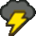

Inventory
Players can carry around a wide variety of Items, Power-Ups, Gear and Badges.
Regardless of the size or number of things being carried, all players begin play with 10 Inventory slots, which can each fit an Item, Power-Up, piece of Gear or similarly-sized handheld object.
Items
Items are single-use consumables with a wide variety of effects. Generally, Items require an action to use and are consumed immediately. You don't need to make any special checks, though you can get more out of your Items using Aim, Heal and Crafts.
Mushroom
ItemCurative
• 5 Coins
Restores 5 HP to a willing target.

Super Shroom
ItemCurative
Restores 10 HP to a willing target.

Ultra Shroom
ItemCurative
Restores 50 HP to a willing target.

Slow Shroom
ItemCurative
Restores 2 HP a turn for 10 turns to a willing target.

Life Shroom
ItemCurative
Restores 10 HP and revives a willing target from KO.
If a character is KO'd while holding a Life Shroom, it is automatically consumed and heals them back to 10 HP.

Dried Shroom
ItemCurative
Restores 1 HP to a willing target.

Honey Syrup
ItemCurative
Restores 5 FP to a willing target.

Maple Syrup
ItemCurative
Restores 10 FP to a willing target.

Jammin' Jelly
ItemCurative
Restores 50 FP to a willing target.

Gradual Syrup
ItemCurative
Restores 2 FP a turn for 10 turns to a willing target.
Tasty Tonic
ItemCurative
Cures status ailments (e.g. Lingering, Stun) for a willing target.

Hustle Drink
ItemCurative
Cures Status ailments (e.g. Lingering, Stun) for a willing target, and allows them to Hustle (1) for the next turn.

Whacka Bump
ItemCurative
Restores 25 HP and 25 FP to a willing target.

Dusty Hammer
ItemAttack
Deals 1 Piercing damage to target enemy.

Dusty Boomerang
ItemAttack
Deals 1 Piercing damage, twice, to all enemies in target group in a straight line.
POW Block
ItemAttack
Deals 2 Piercing Earth/Quake damage to all enemies outside the user's group in contact with a solid surface.

Reflect Cape
ItemAttackBooster
Deals 2 Piercing damage to a target in melee, then equips the user with a cape; until the end of the round, they receive +1d6 to Guard checks against ranged attacks, as if Boosted.

Fire Burst
ItemAttack
Deals 3 Piercing Fire damage to all enemies in target group and leaves a Lingering (1) burn for 3 turns.

Ice Storm
ItemAttack
Deals 3 Piercing Ice damage to all enemies in target group – targets are frozen, Dazing (1) them for 1 turn.

Bubble Wave
ItemAttack
Deals 3 Piercing Water damage to all enemies in target group – targets are encased in bubbles, Dazing (1) them for 1 turn.

HP Drain
ItemAttack
Deals 5 Piercing Shadow damage to target, then restores the damage dealt as HP for the user.


Thunder Bolt
ItemAttack
Deals 5 Piercing Shock damage to target.
Thunder Rage
ItemAttack
Deals 5 Piercing Shock damage to all enemies outside the user's group.

Earth Quake
ItemAttack
Deals 5 Piercing Earth/Quake damage to all enemies outside the user's group in contact with a solid surface.

Shooting Star
ItemAttack
Deals 6 Piercing Star damage to all enemies outside the user's group.

Fright Mask
ItemHazard
All enemies in target group are terrified, either fleeing or leaving them Stunned (3) for 3 turns (their choice).
Sleepy Sheep
ItemHazard
All enemies in target group are put to sleep, Dazing (1) them for 3 turns.
Mini Mr. Mini
ItemHazard
All enemies in target group are shrunken, Weakening (1) Attack for 3 turns.

Mr. Softener
ItemHazard
All enemies in target group are softened up, Weakening (1) Defense for 3 turns.

Dizzy Dial
ItemHazard
All enemies in target group are dizzied, Disorienting (1) them for 3 turns.
Stopwatch
ItemHazard
All enemies in target group are partially frozen in time, leaving them Stunned (3) for 3 turns.

Ruin Powder
ItemHazard
All enemies in target group have their senses addled, Confusing (1) them for 3 turns.

Power Punch
ItemBooster
Enlarges a willing target, Boosting (1) Attack for 3 turns.
Courage Shell
ItemBooster
Toughens a willing target's body, Boosting (1) Defense for 3 turns.

Volt Shroom
ItemBooster
Electrifies a willing target, bestowing the following Contact trait for 3 turns:
Contact
The attacker takes 1 Piercing Shock DMG, and you make a Steady check; the attacker is Dazed for 1 turn for each Grade of Success.
Spite Pouch
ItemBooster
Protects a willing target with a vengeful curse, bestowing the following Contact trait for 3 turns:
Contact
The attacker takes Piercing damage equal to half the damage dealt to you, with no chance to resist.

Repel Cape
ItemBooster
Makes a willing target dodgier; for the next 3 turns, their Dodge checks are Boosted (1).
While this Boost lasts, they can attempt to Dodge before they Block.

Boo's Sheet
ItemBooster
Turns a willing target invisible like a Boo for 1 turn, making them invisible, intangible and bestowing the following Weakness:
Weakness (Sudden Light)
This weakness overrules any existing immunity or resistance. You are stunned by the light, ending your invisibility and Dazing (1) you for a turn for each point of damage taken (minimum 1 turn).

Stone Cap
ItemBooster
Turns a willing target into a solid stone statue for 3 turns, preventing them from taking any action, but making them immune to all attacks, hazards, Statuses and similar effects.
If used while airborne, the user can crash into a single target from above, dealing 6 Earth DMG with an Aerial attack!
In any case, the user is grounded for the duration, ignoring their Fly or Hover Traits.
Also bestows the following Weakness:
Weakness (Blast, Quake)
This weakness overrules any existing immunity or resistance.
Your stone form is chipped, ending your invulnerability and Dazing (1) you for a turn for each point of damage taken (minimum 1 turn).

Carry Cloud
ItemBooster
Gives a willing target a cloud to ride in for 3 turns, bestowing the Hover and Fly Traits; checks made to Fly with the cloud can use either Coordination or Magic instead of Athletics.
The cloud becomes intangible and floats away afterwards.

Mystery Box
ItemQuirk
When used, roll 2d6 to determine this Item's effect.
If the user would receive an Item after use, it must either be used on themselves immediately (as part of the same action) or be wasted as the magic of the Mystery Box fades away.
- 2: The user is struck by a Dusty Hammer, with no chance to resist.
- 3: The user briefly receives a Repel Cape.
- 4: The user briefly receives an Ultra Shroom.
- 5: The user briefly receives a Slow Shroom.
- 6: The user briefly receives a Mushroom.
- 7: Target enemy group is affected by a Fire Burst.
- 8: The user briefly receives a Honey Syrup.
- 9: The user briefly receives a Gradual Syrup.
- 10: The user briefly receives a Jammin' Jelly.
- 11: Target enemy group is affected by a Stopwatch.
- 12: All enemies outside the user's group are affected by a Shooting Star.
If a Mystery Box would be crafted into another Item, roll 2d6 as above, and treat the Mystery Box as that Item. Its value stays the same.

Point Swap
ItemQuirk
Swaps any target's current HP and FP totals, without exceeding their maximum values.
Effectiveness on enemies can vary depending on their effective FP.

Poison Shroom
ItemQuirk
When fed to a willing target, they roll 1d6:
- On 1-5, if the user is immune to poison or similar statuses, they heal 10 HP.
Otherwise they're afflicted with a Lingering (1) poison for 3 turns; if they're unable to shrug it off with Steady outright, their current HP is also halved.- On 6, their HP is completely restored, and their status ailments (e.g. Lingering, Stun) are cured.


Why would you want to eat a Poison Shroom? The risk far outweighs the reward. Although, if you get creative, you can find all sorts of uses for weird Items like these.
Power-Ups
Power-Ups are particularly special kinds of consumable Items which provide ongoing effects for a single willing target, similar to Statuses caused by Booster Items.
A character can have one Power-Up active at a time, with new Power-Ups replacing existing Power-Ups immediately.
Power-Ups provide a variety of passive benefits, and can grant modifiers to Techniques or give the user access to entirely new Techniques.
These Technique benefits can't be used simultaneously; you can't use a Power-Up Technique while the Power-Up enhances it, and you can't enhance your Techniques with more than one Power-Up effect.
The magic of a Power-Up doesn't last long! It takes special care to preserve them for future use, requiring a Crafts, Magic or similar check to keep them safe. Typically this requires at least a Great result, though as always, you may be able to get by with less.
Otherwise if they aren't used, a Power-Up will wilt or expire within a few minutes of acquiring it. Some of their magic will last, though, allowing them to be used as ordinary Items.
When purchased in stores, Power-Ups come pre-preserved in special containers – accounting for their higher cost.
Once a Power-Up is used, its Power-Up state lasts as long as its user is able to concentrate, typically ending on its own outside of combat or during breaks between adventure.
Whenever the user takes damage from an attack or is otherwise shaken up, they have to make a Steady check to hold on; on failure, the Power-Up is lost.
Each Steady check made requires a higher Grade of Success than the last check, until the Power-Up is lost.
No matter what, the effects of the Power-Up don't impact this Steady check, either to make it easier or harder.

Fire Flower
Power-Up
Bestows the power to generate fire.
When wilted, the petals can be scattered to produce a similar effect to a Fire Burst.
For 5 FP:
Adds +1 Attack, Lingering x2 and Element (Fire) to an attack.
For 5 FP:
Fireball
Launches a volley of fireballs at a single enemy.
Aim or Magic:
Deals 1 Piercing Fire DMG to the target, repeating with another strike for each Grade of Success, hitting up to [2 x (Power + 1)] times.
Excess damage spills over to new targets.
Each target may be burnt.
Bully or Magic:
Nice!: Lingering (1) for 3 turns
Good!: Lingering (2) for 3 turns
Great!: Lingering (3) for 3 turns
Adds:
+1 Resist (Fire)
Removes:
Immunities and Resistances to Ice and Water
Ice Flower
Power-Up
Bestows the power to generate ice.
When wilted, the petals can be scattered to produce a similar effect to an Ice Storm.
For 5 FP:
Adds +1 Attack, Daze x2 and Element (Ice) to an attack.
For 5 FP:
Iceball
Launches a barrage of ice at a single enemy.
Aim or Magic:
Deals 1 Piercing Ice DMG to the target, repeating with another strike for each Grade of Success, hitting up to [2 x (Power + 1)] times.
Excess damage spills over to new targets. Each target may be frozen in place.
Bully or Magic:
Nice!: Daze (1) for 3 turns
Good!: Daze (2) for 3 turns
Great!: Daze (3) for 3 turns
Adds:
+1 Resist (Ice)
Removes:
Immunities and Resistances to Fire

Bubble Flower
Power-Up
Bestows the power to generate bubbles of water.
When wilted, the petals can be scattered to produce a similar effect to a Bubble Wave.
For 5 FP:
Adds +1 Attack, Indirect and Element (Water) to an attack.
For 5 FP:
Bubble Blower
Launches a cloud of bubbles at a foe at range, which breeze past them to strike enemies behind them. Each new target causes the cloud to grow weaker, dealing 1 less damage (to a minimum of 1).
Each target may be encased in bubbles.
Aim or Magic:
Good!: [2 x (Power + 1)] Piercing Water DMG
Bully or Magic:
Nice!: Daze (1) for 3 turns
Good!: Daze (2) for 3 turns
Great!: Daze (3) for 3 turns
Adds:
+1 Resist (Water)
Removes:
Immunities and Resistances to Shock
Gold Flower
Power-Up
Bestows the power to generate radiant orbs of golden light.
Even when wilted, the petals can be scattered to produce a burst of light, producing a similar effect to a Dizzy Dial – which also causes (roughly) 1d6 Coins to be scattered around.
For 5 FP:
Adds +1 Attack, Burst and Element (Light) to an attack.
For 5 FP:
Gold Burst
Hurls an orb of golden light at the enemy, which explodes to strike a target in front of and behind them; the additional targets take 1 less damage (to a minimum of 1).
Each target may blinded by the light.
Aim or Magic:
Good!: [2 x (Power + 1)] Piercing Light DMG
Bully or Magic:
Nice!: Disorient (1) for 3 turns
Good!: Disorient (2) for 3 turns
Great!: Disorient (3) for 3 turns
Adds:
Immune (Light)
Removes:
Immunities and Resistances to Shadow
Coins scatter around the battlefield when successfully attacking with a Gold Flower, leaving (roughly) 1d6 Coins for each attack made.
Cloud Flower
Power-Up
Surrounds the target with a fluffy coat of clouds, allowing them to sculpt similar clouds from thin air.
When wilted, the head of the flower can expand to function similarly to a Carry Cloud.
For 5 FP:
Adds +1 Attack, Indirect and Element (Air) to an attack.
For 5 FP:
Cloud Blast
Conjures a thick wall of clouds and blasts it at the target indirectly, which then breeze past to strike enemies behind them. The size of the cloud allows it to hit enemies regardless of their elevation.
Each new target causes the clouds to thin out, dealing 1 less damage (to a minimum of 1).
Each target may be entangled in clouds, making it harder for them to fight back.
Crafts or Magic:
Good!: [2 x (Power + 1)] Air DMG
Bully or Magic:
Nice!: -1 Attack for 3 turns
Good!: -2 Attack for 3 turns
Great!: -3 Attack for 3 turns
Adds:
+1 Resist (Air)
Elevation
Spend 2 FP for each use. Elevation can be provided for yourself or for another willing character, and lasts as long as your Power-Up state.
When used on yourself, you can use Athletics, Crafts or Magic.
When used on other characters, either they use Athletics, or you use Crafts or Magic.
Removes:
Immunities and Resistances to Water
Amp Shroom
Power-Up
Bestows the power to generate electricity.
When wilted, can be eaten to produce a similar effect to a Volt Shroom.
For 5 FP:
Adds +1 Attack, Piercing and Element (Shock) to an attack.
For 5 FP:
Lightning Bolt
Launches a blast of electricity at the enemy, arcing from them to strike enemies behind them.
Each new target causes the bolt to lose some charge, dealing 1 less damage (to a minimum of 1).
Each target may be temporarily paralysed by the shock.
Aim or Magic:
Good!: [2 x (Power + 1)] Piercing Shock DMG
Bully or Magic:
Nice!: Stun (1) for 3 turns
Good!: Stun (2) for 3 turns
Great!: Stun (3) for 3 turns
Adds:
+1 Resist (Shock)
Removes:
Immunities and Resistances to Earth

Boo Mushroom
Power-Up
Turns the user ghostly and pale; they may even take on an uncanny resemblance to a Boo!
When wilted, can be eaten to produce a similar effect to a Boo's Sheet.
For 5 FP:
Adds +1 Attack, Fear x2 and Element (Shadow) to an attack.
For 2 FP:
Outta Sight
Turns the user and a willing ally invisible and intangible
Magic or Trickery:
Nice!: Become Secure for 1 turn
Adds:
Immune (Fear, Shadow)
Weakness (Sudden Light)
This weakness overrules any existing immunity or resistance.
You are stunned by the light, Dazing (1) you for a turn for each point of damage taken (minimum 1 turn).
Hover Intangibilit Invisibility
Rotten Mushroom
Power-Up
Floods the user's body with poison; if they're not immune to poison or similar statuses, they have to make a Steady check to resist a Lingering (1) poison lasting 3 turns; if they can't prevent the poison outright, their current HP is halved, and the Power-Up fails.
When wilted, can be eaten (by the brave and the foolish) for an effect similar to a Poison Shroom.
For 5 FP:
Adds +1 Attack, Lingering x2 and Element (Poison) to an attack.
For 5 FP:
Touch of Death
A simple touch carrying a potent poison.
Coordination:
Good!: [2 x (Power + 1)] Piercing Poison DMG
Bully or Magic:
Nice!: Lingering (1) for 3 turns
Good!: Lingering (2) for 3 turns
Great!: Lingering (3) for 3 turns
Adds:
Immune (Poison)
Removes:
Immunities and Resistances to Fire and Water

Super Leaf
Power-Up
Gives the target a magic raccoon-like tail and ears, and some of the qualities of a Tanooki creature.
When the magic fades, the leaf can be wielded for an effect similar to a Reflect Cape.
For 0 FP:
Tail Smack
A hefty spinning smack of the tail, hitting the target indirectly.
Coordination:
Auto: [Power] DMG
Nice!: [2 x Power] DMG
For 2 FP:
Adds Aerial and/or Indirect to an attack.
Adds:
Fly
Latent (Stone Cap)
For 5 FP: Activate the effect of a Stone Cap, targeting yourself.
Grants the user +1d6 to checks where their tail and ears provides them a clear advantage, such as Notice checks to listen, or Steady checks to balance.
Cape Feather
Power-Up
Gives the target a magic cape.
When the magic fades, the feather can be wielded for an effect similar to a Reflect Cape.
For 0 FP:
Cape Spin
A quick spinning smack with the cape, hitting the target indirectly.
Coordination:
Auto: [Power] DMG
Nice!: [Power] DMG x2
For 2 FP:
Adds Aerial and/or Indirect to an attack.
For 5 FP:
Plunging Tremor
The user slams into the earth from above, causing a mighty tremor – affecting all enemies outside the user's group in contact with the floor, wall or ceiling.
The user must be airborne before attacking, and becomes grounded afterwards.
Athletics:
Good!: : [2 x [Power + 1]] Piercing Earth Quake DMG
Adds:
Fly
Grants the user +1d6 to checks where their cape provides a clear advantage, such as Athletics checks to fly with a running start, or Guard checks to deflect projectiles.

Boomerang Flower
Power-Up
Gives the target the ability to generate boomerangs from thin air.
When wilted, the head of the flower can be thrown similarly to a Dusty Boomerang.
For 0 FP:
Boomer-Whack
A quick smack with a held boomerang, hitting the target indirectly.
Coordination:
Auto: [Power] DMG
Nice!: [2x Power] DMG
For 5 FP:
Boomerang
A hefty spinning boomerang smack from afar.
Hits all targets in a straight line, twice.
Aim:
Good!: : [Power + 1] DMG x2
Adds:
Fly
Grants the user +1d6 to checks where their cape provides a clear advantage, such as Athletics checks to fly with a running start, or Guard checks to deflect projectiles.
Super Bell
Power-Up
Gives the target a fluffy outer coat, making them look and behave more cat-like.
When the magic fades, the bell can be rung loudly, producing a similar effect to a Dizzy Dial, but based on sound.
For 2 FP:
Adds Aerial, Piercing or Indirect to an unarmed melee attack.
For 0 FP:
Cat Claws
A rapid duo of claw swipes, striking indirectly with the suit's sharp claws at the foe's weak point.
Coordination:
Auto: [Power] Piercing DMG
Nice!: [Power] Piercing DMG x2
Grants the user +1d6 to checks where their cat-like nature provides a clear advantage, such as Athletics when jumping and climbing, or Steady when balancing.
Rock Mushroom
Power-Up
Coats the target in a light-weight rocky shell and allows them to bend the earth to their will.
When wilted, the mushroom can be thrown to the ground for a similar effect to a POW Block.
For 5 FP:
Adds +1 Attack, Indirect and Element (Earth) to an attack.
For 5 FP:
Rolling Rock
Forms a boulder around the user, then bowls through enemies – hitting indirectly. The user can bowl over the target to strike targets behind them. Each new target slows them down, dealing 1 less damage (to a minimum of 1).
The sheer force of the blow can leave each target reeling.
Athletics:
Good!: [2 x (Power + 1)] Earth DMG
Athletics or Bully:
Nice!: Disorient (1) for 3 turns
Good!: Disorient (2) for 3 turns
Great!: Disorient (3) for 3 turns
Adds:
+1 Defense
+1 Resist (Shock)
Weakness (Blast, Quake)
This weakness overrules any existing immunity or resistance. Your stone form is chipped, nullifying this Power-Up's Defense and Resist boosts for a turn for each point of damage taken (minimum 1 turn), as well as Dazing (1) you for the same duration. Removes:
Hover
Fly

Mini Mushroom
Power-Up
Causes the user to shrink to miniscule proportions.
When wilted, can be thrown at enemies to produce a similar effect to a Mini Mr. Mini.
For 5 FP:
The user becomes Hustled (1) for 1 turn.
For 2 FP:
Under-Foot
The user ducks away from combat with superior quickness, hiding behind something bigger.
Trickery:
Nice!: Become Secure of 1 turn
Adds:
-2 Power
Homing and Selective to all Techniques
Weakness (Air, Crushing)
Crushing attacks can't bypass your Secure status from Under-Foot.
The Level and Duration of all Statuses you suffer from these attacks are doubled.
Grants the user +2d6 to checks where their small size provides them a clear advantage, such as landing a hit with Coordination, or dodging attacks with Trickery.
However, checks where the user's size is a hindrance, such as Guard, require a higher Grade of Success than usual.
Mega Mushroom
Power-Up
Causes the user to grow to a tremendous size.
When wilted, can be consumed for an effect similar to a Power Punch.
For 5 FP:
Megaton Charge
The user barrels forwards with their full weight, striking all enemies in the target group.
Athletics:
Good!: [Power] DMG
Great!: [2x Power] DMG
For 5 FP:
Megaton Stomp
The user slams the ground with their full weight, causing a powerful shockwave – affecting all enemies outside the user's group in contact with the floor, wall or ceiling.
Athletics:
Great!: [2x Power] Piercing Earth Quake DMG
Adds:
+3 Power
Grants the user +2d6 to checks where their large size provides them a clear advantage, such as blocking attacks with Guard, or standing their ground with Steady.
Checks where the user's size is a hindrance, such as Coordination, require two more Grades of Success than usual; in the case of this Power-Up's Megaton Charge and Megaton Stomp, this is already factored in.

Power-Ups don't need to be preserved – if you don't want to use one right away, letting it wilt so you can use it as an Item can be a solid strategy. After all, the original games didn't have any Power-Ups!
Gear
Gear are specialised pieces of equipment that provide the user with new Techniques and other significant advantages, both in the field and in combat.
If players request personalised Gear, Craft it themselves or (in the case of Basic Gear) begin play with a Tool Technique, they can even design their own!
Basic Gear
- Doesn't provide bonuses to stats or checks.
- If the Gear was generated through a Tool Technique in character creation, players can begin play with it without spending Coins, and don't design another Technique for the Gear; unfamiliar users only have access to a basic version of that Technique, using the below rules at the GM's discretion.
- Otherwise, this Gear provides the user with a new Technique.
This Technique must cost 0 FP, and can include one Trait as a Tech Default, based on the Gear's primary use (e.g. Tool for weapons, or Aerial for boots).
Regardless of the user's level, only 1 Trait can be used to reduce the Technique's FP cost.- Personal Traits can be added for a cost of 10 Coins each, but checks using those Traits (e.g. Fly) can only score up to a Nice result, and their numerical values (e.g. Resist, HP healed with Immune, Contact damage) are limited to 1.
Super Gear
- Grants either +1 Power (when wielded as a Weapon), +1 Defense (when carried as a Shield or worn as Armour), or +1 to a Stat.
- Adds +1d6 to appropriate checks.
- Grants the user a new Technique using the Gear.
This Technique can include one Trait as a Tech Default, based on the Gear's primary use (e.g. Tool for weapons, or Aerial for boots).
Regardless of the user's level, only 2 Traits can be used to reduce the Technique's FP cost.- Personal Traits can be added for a cost of 25 Coins each, with their numerical values beginning at 1. Checks using those Traits can score up to a Great result, but no higher.
Each numerical effect of a Trait can be enhanced to 2 for another 25 Coins, but no further.

Ultra Gear
- Grants either +2 Power (when wielded as a Weapon), +2 Defense (when carried as a Shield or worn as Armour), or +2 to a Stat.
- Adds +2d6 to appropriate checks.
- Grants the user txo new Techniques using the Gear.
These Techniques can include one Trait as a Tech Default, based on the Gear's primary use (e.g. Tool for weapons, or Aerial for boots).
Regardless of the user's level, only 4 Traits can be used to reduce the Technique's FP cost.- Personal Traits can be added for a further 50 Coins each, with their numerical values values (e.g. Resist, HP healed with Immune, Contact damage) beginning at 1.
Each numerical effect of a Trait can be increased, 1 point at a time, for another 50 Coins.
The following pieces of Gear are just a few examples of what can be found in the world, either following these rules or as unique examples.
Basic Boots
GearBasicBoots
An ordinary pair of jumping shoes.
For 0 FP:
Jump
The user leaps onto the foe's head, attacking with a double-bounce.
Athletics or Coordination:
Auto: [Power] DMG
Nice!: [Power] DMG x2

Basic Hammer
GearBasicWeapon
An ordinary tool for busting blocks.
For 0 FP:
Hammer Whack
The user smacks the foe with a straightforward hammer attack.
Coordination:
Auto: [Power] DMG
Nice!: [2x Power] DMG
Spiny Hat
GearBasicHeadgear
A skullcap with one or more sharp spikes, intended to ward off attacks from above.
In a pinch, it can be used to attack.
Adds:
Immune (Aerial)
This Immunity is negated if the attacker has Immune (Spikes).
Contact
The attacker takes 1 Piercing DMG, and you make a Steady check; with a Nice result, the attacker is Dazed for 1 turn. For 0 FP:
Pointed Headbonk
The user leaps onto the foe's head, skewering them with their own spiky head.
Athletics or Coordination:
Nice!: [Power + 1] DMG
Good!: [2x (Power + 1)] DMG
Spiny Spear
GearBasicWeapon
A stick with a pointed spike attached at the end. While it's intended as a weapon, just carrying it around helps protect against jump attacks.
Adds:
Immune (Aerial)
This Immunity is negated if the attacker has Immune (Spikes).
Contact
The attacker takes 1 Piercing DMG, and you make a Steady check; with a Nice result, the attacker is Dazed for 1 turn. For 0 FP:
Spear Strike
The user stabs from afar with their spear. This attack has reach, allowing it to hit airborne enemies.
It can strike through the initial target to hit one more target behind them, but this attack deals -1 damage.
Coordination:
Nice!: [Power] DMG / [Power - 1] DMG
Good!: [2x Power] DMG / [(2x Power) - 1] DMG

Super Boots
GearSuperBoots
Sturdy leather boots. Comfy, but reliable.
Grants +1d6 to appropriate checks (e.g. Athletics), and +1 Power when wielded, such as in Spin Jump.
For 2 FP:
Spin Jump
The user jumps on the foe, then slams them with a forceful ground-pound.
Athletics or Coordination:
Auto: [Power] DMG
Nice!: [Power] DMG, [2 + Power] DMG
Super Hammer
GearSuperWeapon
A heavy iron hammer. Solid and reliable.
Grants +1d6 to appropriate checks (e.g. Coordination) using this hammer, and +1 Power when wielded, such as in Spin Hammer.
For 2 FP:
Spin Hammer
The user spins in place with their hammer, smacking targets into foes behind them.
Coordination:
Auto: [Power] DMG
Nice!: [2x Power] DMG
Athletics or Bully: For each Grade of Success, launch the target into one additional target behind them, dealing [Power] DMG to each new target.

Ultra Boots
GearUltraBoots
Aerodynamic jumping shoes. Built for maximum mobility as well as comfort.
Grants +2d6 to appropriate checks (e.g. Athletics), and +2 Power when wielded, such as in Spin Jump and Spring Jump.
For 2 FP:
Spin Jump
The user jumps on the foe, then slams them with a forceful ground-pound.
Athletics or Coordination:
Auto: [Power] DMG
Nice!: [Power] DMG, [2 + Power] DMG
For 4 FP:
Spring Jump
The user leaps high into the air, then slams back down onto the foe with a single decisive strike.
Athletics or Coordination:
Nice!: [3 + Power] DMG
Good!: [2x (3 + Power)] DMG

Ultra Hammer
GearUltraWeapon
A solid steel hammer. Extremely heavy and nigh-unbreakable.
Grants +2d6 to appropriate checks (e.g. Coordination) using this hammer, and +2 Power when wielded, such as in Spin Hammer and Ultra Whack.
For 2 FP:
Spin Hammer
The user spins in place with their hammer, smacking targets into foes behind them..
Coordination:
Auto: [Power] DMG
Nice!: [2x Power] DMG
Athletics or Bully: For each Grade of Success, launch the target into one additional target behind them, dealing [Power] DMG to each new target.
For 4 FP:
Ultra Whack
The user builds up as much power as they can, then brings the hammer down on an enemy.
Coordination:
Nice!: [Power + 3] DMG
Good!: [2x (Power + 3)] DMG
Legendary Cookbook
GearUniqueBook
A master chef's cookbook. Their legendary instruction can help any chef master the art of combining ingredients.
It has no Techniques, but when the holder consults this book while cooking, they can make Crafts checks with +2 Spirit.
Checks made to combine two ingredients are especially effective, receiving +2d6.

Strange Sack
GearUnique Container
An exceptionally roomy pack, equivalent in value and rarity to Ultra Gear.
It has no Techniques, but provides an additional 10 Inventory slots for the holder to use, without occupying an Inventory slot itself.
Items are still relatively easy to locate, even when the sack is full, as they seem to rise up to the top whenever they're needed.

Gear is rare and expensive, but well worth the effort to track down. A good piece of Gear can either supplement your existing skillset or make you more reliable in different fields, giving you more options to work with.
Badges
Badges are a special piece of equipment that take up no space in the inventory.
Instead, a character equips a number of their owned Badges at once. You can equip any number of Badges, but their BP total must be equal to or less than your maximum BP.
Badges enhance your abilities in a variety of ways, often subverting the rules of standard checks and Techniques. Generally you can change your equipped Badges at-will, but during combat and other stressful situations, you're unable to change your equipped Badges – at least, not without a concentrated effort, and how much you can actually change at a time will depend on the circumstances.
Heart Plus
BadgeStats
• 3 BP
Increases Heart by 1 and adds 5 Max HP.
Spirit Plus
BadgeStats
Increases Spirit by 1 and adds 5 Max FP.
Courage Plus
BadgeStats
Increases Courage by 1.
I Spy
BadgeSkills
Adds +2d6 to Notice checks to find treasure.
Super Appeal
BadgeSkills
Adds +1d6 to Appeal checks.
Timing Tutor
BadgeSkills
Adds +1d6 to Stylish Moves checks.
Chill Out
BadgeSkills
Adds +2d6 to Initiative checks. You don't suffer First Strikes, even from a Critical Failure.
Emblem Mask
BadgeSkills
You take on a simple disguise.
Adds +1d6 to Trickery checks to maintain your disguise.
Adds +1d6 to Persuade checks with people who are influenced by your disguise.
Peekaboo
BadgeSkills
Once per turn, you can make a Notice check as a free action.
For each Grade of Success, you can find out how much HP one enemy has.

Medicine Man
BadgeSkills
Adds +2d6 to Heal checks made to use Items.
Power Rush
BadgeAttack
When you have 5 or less HP, you have +2 Attack.

Mega Rush
BadgeAttack
When you have just 1 HP, bestows +5 Attack.

Simplifier
BadgeAttack
All Techniques have Simple, but you can't gain SP from Exceptional Results when using them.
Unsimplifier
BadgeAttack
All Techniques have Unwieldy, but they earn SP from Exceptional Results as if they had one more Grade of Success on each check.
Ice Power
BadgeAttack
You ignore Contact traits that deal Fire damage, and have +1 Resist (Fire).
All of your attacks have Element (Ice).
Earth Power
BadgeAttack
You ignore Contact traits that deal Shock damage, and have +1 Resist (Shock).
All of your attacks have Element (Earth).
Fire Power
BadgeAttack
You ignore Contact traits that deal Ice damage, and have +1 Resist (Ice).
All of your attacks have Element (Fire).
HP Drain
BadgeAttack
Bestows -1 Attack, but when a strike you make would deal damage, you recover 1 HP.

FP Drain
BadgeAttack
Bestows -1 Attack, but when a strike you make would deal damage, you recover 1 FP.
First Attack
BadgeAttack
During the Surprise Round, enemies with a lower Max HP than your Level take double damage from your attacks.
P-Up, D-Down
BadgeAttack
Bestows +1 Attack, but attacks made against you have +1 Attack.
Jumpman
BadgeAttack
Your Aerial Techniques have +1 Attack.
You cannot use attacks that don't have Aerial.

Weaponman
BadgeAttack
Your Tool (Indirect) Techniques have +1 Attack.
You cannot use attacks that don't have Tool (Indirect).
Handyman
BadgeAttack
Your Techniques that make contact with an enemy and don't have Aerial have +1 Attack.
You cannot use attacks that don't make contact with an enemy or that have Aerial.
Marksman
BadgeAttack
Your Techniques with either Tool (Ranged) or Ranged have +1 Attack.
You cannot use attacks that don't have Tool (Ranged) or Ranged.
Flower Saver
BadgeAttack
Whenever you would spend FP, you spend 1 less than normal. This Badge cannot reduce FP cost for any Technique or action below 1.
All or Nothing
BadgeAttack
Bestows +1 Attack, but all Primary Checks gain Commitment (if applicable) and Unwieldy.
Bump Attack
BadgeAttack
Enemies with a lower Max HP than your Level take double damage from your attacks.
Power Plus
BadgeAttack
Bestows +1 Attack.
Last Stand
BadgeDefense
When you have 5 or less HP, incoming attacks have their damage halved (before you react).

Close Call
BadgeDefense
When you have 5 or less HP, you can attempt to Dodge before you Block, and you have +1d6 to Dodge checks.

Damage Dodge
BadgeDefense
+2d6 to Guard checks.
P-Down, D-Up
BadgeDefense
Bestows -1 Attack and +1 Defense.
Pretty Lucky
BadgeDefense
When attacked, you can attempt to Dodge before you Block.
Lucky Day
BadgeSkills
When attacked, you can attempt to Dodge before you Block.
+2d6 to Dodge checks.
Spike Shield
BadgeDefense
Bestows Immunity (Spikes).
Zap Tap
BadgeDefense
Bestows Contact:
The attacker takes 1 Piercing Shock DMG, and you make a Steady check; the attacker is Dazed (1) for 1 turn for each Grade of Success.
Feeling Fine
BadgeDefense
Bestows Immune (Negative Status).
Defend Plus
BadgeDefense
Bestows +1 Defense.
Return Postage
BadgeDefense
Bestows the following Contact Trait:
The attacker takes damage equal to half the damage dealt to you.
Multibounce
BadgeTechnique
For 2 FP:
Multibounce
The user jumps on a foe, then attempts to jump on as many foes behind them as possible.
Athletics or Coordination:
Nice!: [Power] DMG; hits one target for each Grade of Success.
Weapon Throw
BadgeTechnique
For 1 FP while wielding a melee weapon:
Weapon Throw
The user throws their held weapon as an impromptu ranged attack.
Aim:
Auto: [Power] DMG
Nice!: [2x Power] DMG
Spin Smash
BadgeTechnique
By spending 2 FP, you can treat a single-target Technique as if it has Launch.
If it already had Launch, add another instance of Launch.
Power Smash
BadgeTechnique
For 2 FP:
Adds +1 Attack to a single-target attack.
Piercing Blow
BadgeTechnique
For 2 FP:
Adds Piercing to a single-target attack.
Ice Smash
BadgeTechnique
By spending 3 FP, you can treat a single-target Technique as if it has Element (Ice) and Daze x3 – the Secondary Check defaults to Magic.
Shrink Slam
BadgeTechnique
By spending 2 FP, you can treat a single-target Technique as if it has Weaken (Attack) x3 – the Secondary Check defaults to Magic.
Soft Slam
BadgeTechnique
By spending 2 FP, you can treat a single-target Technique as if it has Weaken (Defense) x3 – the Secondary Check defaults to Magic.
Sleepy Slam
BadgeTechnique
By spending 2 FP, you can treat a single-target Technique as if it has Daze x3 – the Secondary Check defaults to Bully or Magic.
Dizzy Attack
BadgeTechnique
By spending 2 FP, you can treat a single-target Technique as if it has Disorient x3 – the Secondary Check defaults to Magic or Trickery.
Poison Touch
BadgeTechnique
By spending 2 FP, you can treat a single-target Technique as if it has Lingering x3 – the Secondary Check defaults to Magic.
Disarming Slam
BadgeTechnique
By spending 2 FP, you can treat a single-target Technique as if it has Disarm x3 (Tool) – the Secondary Check defaults to Bully or Magic.
Head Rattle
BadgeTechnique
By spending 2 FP, you can treat a single-target Technique as if it has Confuse x3 – the Secondary Check defaults to Bully or Magic.
Charge
BadgeTechnique
Bestows use of the Charge Technique (1 FP).
Boosts your Attack by 1 until after your next attack, or until the end of your next turn.
Repeated uses of this Technique increase the Boost by 1 and extend its duration by one more turn.
Tornado Jump
BadgeTechnique
Bestows the use of the Tornado Jump (2 FP) Technique. If you have multiple Tornado Jump Badges, you can use them together by spending 1 FP for each additional Badge.
Treat [X] as the number of additional Tornado Jump Badges used.
Tornado Jump
Stomps on an enemy, then generates a burst of wind around them.
Athletics:
Nice!: [Power] DMG
Good!: [Power] DMG, [XX] Piercing Air DMG
The extra Air damage is Indirect, and affects all other airborne enemies in the group (but not the first target).
Quake Slam
BadgeTechnique
Bestows the use of the Quake Slam (3 FP) Technique. If you have multiple Quake Slam Badges, you can use them together by spending 1 FP for each additional Badge.
Treat [X] as the number of additional Quake Slam Badges used.
Quake Slam
Pounds the ground to produce a localised tremor, affecting everyone in target group in contact with the ground, wall or ceiling.
Athletics:
Good!: [(2x Power) + (2 x [X])] Piercing Earth Quake DMG
Double Dip
BadgeTechnique
Bestows the use of the Double Dip (4 FP) Technique. If you have multiple Double Dip Badges, you can use them together by spending 2 FP for each additional Badge.
Treat [X] as 1 + the number of additional Quake Slam Badges used.
Double Dip
Allows you to act as if Hustled at Status Level [X] this turn, but all your Hustle actions must be to use consumable Items.
You suffer no penalty on those actions for your Hustled Status.
Fire Drive
BadgeTechnique
Bestows the use of the Fire Drive (5 FP) Technique. If you have multiple Fire Drive Badges, you can use them together by spending 2 FP for each additional Badge.
Treat [X] as the number of additional Quake Slam Badges used.
Fire Drive
Flings a fireball at the target at range, then blazes a path past them to affect more grounded targets.
Aim or Magic:
Good!: [(2x Power) + [XX]] Piercing Fire DMG
Repeats on as many grounded targets as possible behind the target, dealing -1 damage each time.
Bully or Magic:
Nice!: Lingering (1) burn for 3 turns
Good!: Lingering (2) burn for 3 turns
Great!: Lingering (3) burn for 3 turns
Power Bounce
BadgeTechnique
By spending 3 FP, you can treat a single-target Technique as if it has Repeat.
Refund
BadgeBoon
You receive ¼ (rounded down, minimum 1) of an Item or Power-Up's value in Coins when you consume it to use on yourself or another target.
If you would keep the Item after use, you don't receive Coins.
Happy Heart
BadgeBoon
At the start of your turn, roll 1d6. On a result of 4 or more, restore 1 HP.
Happy Flower
BadgeBoon
At the start of your turn, roll 1d6. On a result of 4 or more, restore 1 FP.
Pity Flower
BadgeBoon
When you take damage, make a Steady check.
You restore 1 FP for each Grade of Success. You can't restore more FP than the damage you take.
Heart Finder
BadgeBoon
Restores 1d6 HP after victory.

Flower Finder
BadgeBoon
Restores 1d6 FP after victory.
Item Hog
BadgeBoon
After victory, make a Notice check.
Great!: You may find an Item that belonged to an enemy, as appropriate.
Lucky Start
BadgeBoon
At the start of battle, roll 1d6, and receive the appropriate benefit for 3 turns.
- Restore 2 HP at the start of your turn.
- Restore 2 FP at the start of your turn.
- Contact
The attacker takes 1 Piercing Shock DMG, and you make a Steady check; the attacker is Dazed (1) for 1 turn for each Grade of Success.- +1 Attack.
- +1 Defense.
- When attacked, you can attempt to Dodge before you Block.
Quick Change
BadgeBoon
Allows you to Swap with an ally as a free action.
Once per round, after an enemy group attacks, you can make a Coordination or Trickery check – this counts as a Dodge check.
Great!: You trade places with an ally; attacks aimed at them instead affect you, and attacks aimed at you instead affect them. You can both Block and Dodge as normal.
Money Money
BadgeBoon
After victory, make a Notice check.
You may find more coins that belonged to an enemy, as appropriate.
(Roughly 1d6 per Grade of Success)
Berserker
BadgeBoon
During combat, you have +2 Attack and Immune (Negative Status), but can't spend FP or SP (or equivalent, in the case of Alternative Techniques).
For the duration, you are Confused (3), as well as being Provoked (6) by the nearest enemy in range.
Double Pain
BadgeNegative
Whenever you would take damage from an attack or hazard, you take twice as much. This effect applies after your Defense, Blocking and other means of reducing the damage.
Slow Go
BadgeNegative
Athletics checks relating to running and similar movement suffer a -3d6 penalty, as if Weakened (3).
Credits:
Boo Mushroom Sprite by LadyLuck.
Rotten Mushroom Sprite by LadyLuck.
Mega Mushroom Sprite by LadyLuck.
Fire Power Badge Sprite by LadyLuck.
Handyman Badge original Sprite by LadyLuck, concept by @landsharkrawr.
Markmans Badge original Sprite by LadyLuck.